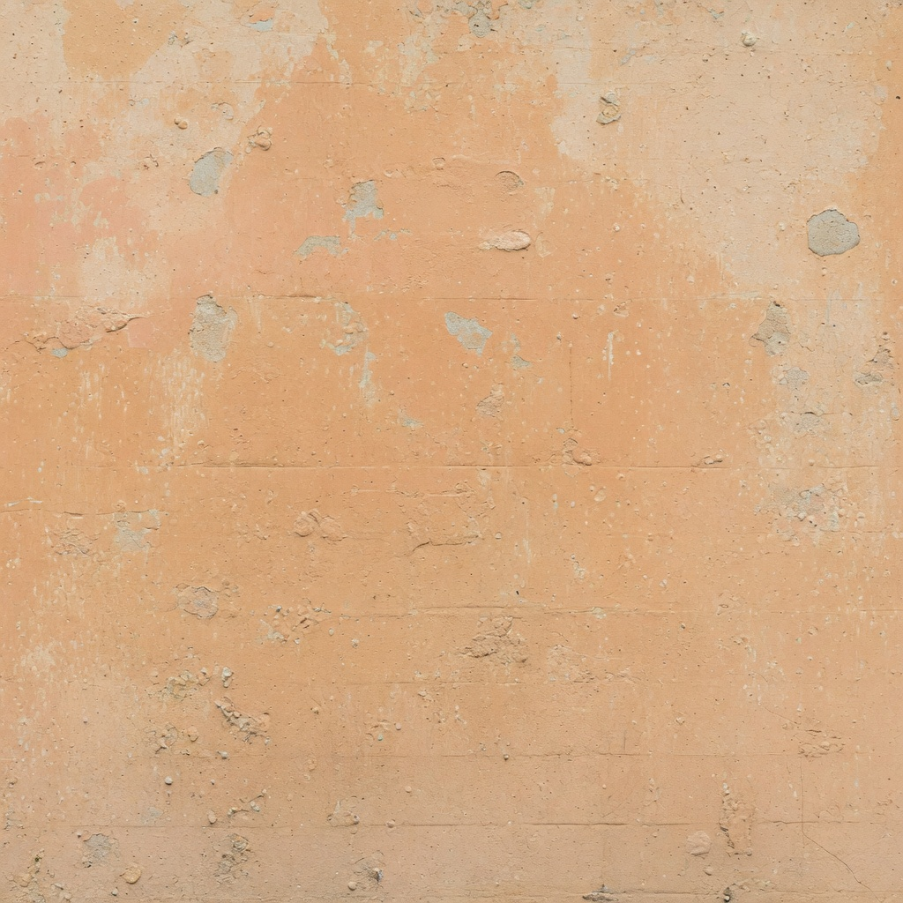
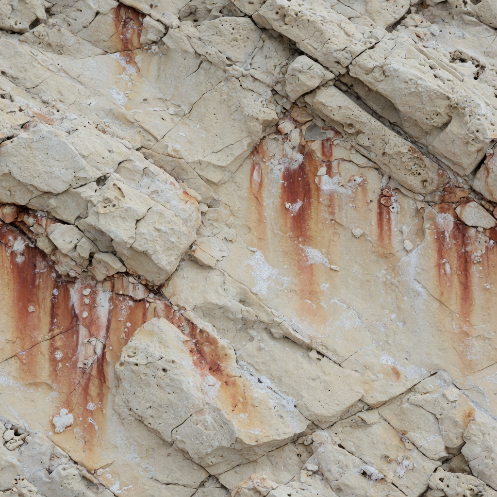
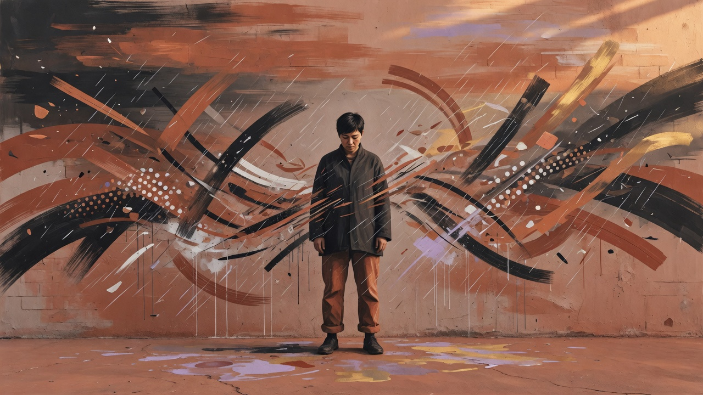

DTRT Lab
The product. Apply it under movement. Stop, plant, first bullet, peek. UNIT 12 is a person-sized dummy. Credit is a stopped head.
How DTRT worksFPS performance lab · Windows · Offline
A first-bullet laboratory. UNIT 12 drops only on a credited stopped head.
In-game artwork: Añasco ocean. Not a trailer still. Scores stay on your PC.
Do this now
On this Windows PC: double-click Play.bat in the DTRT Lab folder. That is the verified RC. There is no public installer yet — this page will not pretend there is.
Saves, settings, and session scores stay on this machine. The game does not create an account or upload results.
What
Deliberate practice: reaction, precision, decision-making, stop-error. Standalone Windows. It does not inject into other titles, read their memory, or sell loot.
Move → Stop → Acquire → Fire
Walking head never counts. Late is named. Overflick is named. The dummy stays up until you do the right thing.
The product. Apply it under movement. Stop, plant, first bullet, peek. UNIT 12 is a person-sized dummy. Credit is a stopped head.
How DTRT worksA later dedicated room: feet planted, plates, not UNIT 12. It is not the brand. Build the mouse, then bring it to the dummy.
How AIM worksWorlds
Añasco is home. Other municipalities change the light and the neighborhood around the same 12 m lane so measurement stays honest.

Where it started. Warm west-coast sun.

Hard sun. Dry coast. Salt and stone.

Culture around the lane, never on the dummy.
In-game materials and courtyard art. Gameplay stills are captured with F12.
Who
Añasco is not a set dressing. It is the hometown the lab was built to remember — without turning history or landmarks into a tourist map.